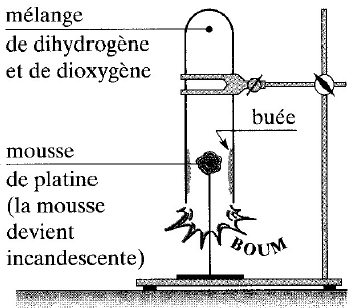

Chapitre III : Catalyse
I - Définition
La catalyse est la modification des vitesses de formation et de disparition par la présence d’un composé en petite quantité qui n’apparait pas dans l’équation-bilan : le catalyseur. Un catalyseur est un corps qui accélère une réaction chimique naturelle sans subir lui-même de modifications permanentes. L’action d’un catalyseur sur une réaction constitue une catalyse de cette réaction.
- Lorsque le catalyseur n’appartient pas à la même phase que les réactifs, la catalyse est dite hétérogène.
- Lorsque le catalyseur appartient à la même phase que les réactifs, la catalyse est dite homogène.
II - Catalyse Homogène
1. Expérience :
Catalyse de l’oxydation des ions I- par les ions S2O82- Manipulation :
Prenons 2 béchers, dans chacun d’eux, versons :
- 1 cm3 de solution I-, 1M
- 5 cm3 de solution S2O82-, 0,16 mol/l
- 1 cm3 d’empois d’amidon.
à t = 0 :
- on ajoute 4 cm3 de solution S2O82-, 1mol/l dans le tube 1
- on ajoute 4 cm3 de solution S2O82-, 1mol/l dans le tube 2 Puis également 3 gouttes d’une solution d’ions Fe2+ 10-2 mol/l.
+ Observation :
- Dans le tube 1, le diiode n’apparaissait qu’au bout de 134 secondes.
- Dans le tube 2, le diiode apparaissait au bout de 10 secondes. La vitesse de formation des molécules de diiode est donc plus grande en présence des ions Fe2+.
+ Conclusion : Les ions Fe2+ sont des catalyseurs de la réaction entre les ions iodure I- et les ions peroxodisulfate S2O82-.
+ Remarque : En présence d’autres ions métalliques, tels que : Fe3+, Ni2+, Mn2+, Cu2+, la réaction est également accélérée.
2. Interprétation de la catalyse :
Les ions S2O82- réagissent rapidement sur les ions Fe2+ pour donner des ions Fe3+ et des ions sulfates SO42-. Les ions Fe3+ formés sont instantanément réduits par les ions I-, pour donner des molécules de diiode I2, tandis que les ions Fe2+ sont régénérés.
Un catalyseur décompose une réaction lente en plusieurs réactions rapides. Le catalyseur est consommé dans une étape et régénéré dans une autre.
III - Catalyse Hétérogène
1. Réaction du dihydrogène sur le dioxygène :
- Expérience :
Mélangeons, dans une éprouvette, deux volumes de dihydrogène et un volume de dioxygène et température ordinaire, aucune réaction ne se produit. Introduisons dans le mélange un peu de mousse de platine, c'est-à-dire du platine à l’état très divisé et d’aspect spongieux. Nous observons l’apparition d’une buée sur les parois.

2. Oxydation de l’éthanol :
- Expérience :
Mettre un peu d’éthanol dans le fond d’un Erlen-Meyer. Placer la spirale incandescente dans l’Erlen-Meyer au dessus de l’alcool. Chauffer légèrement l’alcool par en dessous. L’odeur (rappelant la pomme) qui se dégage suffit à mettre en évidence la formation de l’éthanol.
L’éthanol chauffé se vaporise ou brùle complètement en donnant du dioxyde de carbone et de l’eau. Mais, en présence de cuivre ou de platine chaud, il subit une oxydation ménagée qui laisse intact le squelette carboné.
La chaleur dégagée maintient l’incandescence du filament de cuivre
IV - Catalyse enzymatique
1. Définition
Les enzymes sont des molécules biologiques agissant comme des catalyseurs. Ce sont des protéines, c'est-à-dire des molécules constituées par l’enchainement de plusieurs centaines d’acides aminés.
2. Hydrolyse de l’amidon du pain
a. Expérience :
b. Test du glucose :
En présence du glucose, les ions cuivre (II) bleus contenus dans la liqueur de Fehling sont réduits en ions cuivre (I) et apparaissent sous forme d’un précipité rouge d’oxyde de cuivre (I) : Cu2O.
c. Résultat :
⊃ Tube 1 : Test légèrement positif (L’amidon est peu hydrolysé)
⊃ Tube 2 : Test très positif
⊃ Tube 3 : Test négatif (La salive ne continent pas de glucose)
⊃ Tube 4 : Test positif
d. Interprétation :
- En présence du glucose la liqueur de Fehling bleue donne un précipité rouge.
- La salive accélère la transformation de l’amidon, elle continent une enzyme appelée l’amylase, qui catalyse l’hydrolyse de l’amidon en glucose.